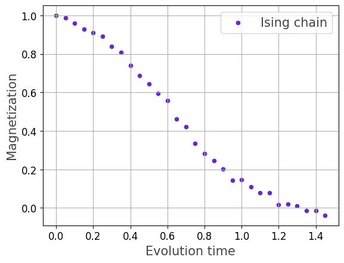

qrisp.operators.qubit.QubitOperator.qdrift#
- QubitOperator.qdrift(forward_evolution=True)[source]#
Simulates the time-evolution of a quantum state under a Hamiltonian using the QDrift (Quantum Stochastic Drift Protocol) algorithm.
QDrift approximates the exact time-evolution operator
\[U(t) = e^{-i H t}, \qquad H = \sum_j h_j H_j,\]by replacing it with a stochastic product of simpler exponentials
\[\tilde{U}(t) = \prod_{k=1}^N e^{-i \, \tau \, H_{j_k}},\]where each term \(H_j\) is sampled independently with probability
\[p_j = \frac{|h_j|}{\lambda}, \qquad \lambda = \sum_j |h_j|.\]Each sampled exponential uses a fixed time-step parameter
\[\tau = \frac{\lambda t}{N}.\]The number of samples \(N\) controls the overall simulation accuracy. Achieving a target precision \(\epsilon\) requires
\[N = \mathcal{O}\!\left( \frac{\lambda^2 t^2}{\epsilon} \right).\]QDrift is particularly suited for large quantum systems whose Hamiltonian are decomposed into a sum of local Pauli terms.
- Parameters:
- forward_evolutionbool, optional
If set to False, \(U(t)^\dagger = e^{itH}\) will be executed (usefull for quantum phase estimation). The default is True.
- Returns:
- callable
A function that implements QDrift. This function receives the following arguments:
- qargQuantumVariable
The quantum argument.
- tfloat, optional
The evolution time \(t\). The default is 1.0.
- samplesint, optional
The number of random samples \(N\) (the number of exponentials in the product). The default is 100. Larger values yield higher accuracy at the cost of higher runtime.
- seedint, optional
Seed for pseudo-random number generator. The default is 42.
- iterint, optional
The number of iterations the unitary \(U(t,N)\) is applied. The default is 1.
Examples
Below is an example usage of the
qdrift()function to simulate a quantum system governed by an Ising Hamiltonian on a one-dimensional chain graph.In this example, we build a chain graph, define an Ising Hamiltonian with given coupling and magnetic field strengths, and compute the magnetization of the system over a range of evolution times using the QDrift algorithm.
import matplotlib.pyplot as plt import networkx as nx import numpy as np from qrisp import QuantumVariable from qrisp.operators import X, Z, QubitOperator # Helper functions def generate_chain_graph(N): G = nx.Graph() G.add_edges_from((k, k+1) for k in range(N-1)) return G def create_ising_hamiltonian(G, J, B): # H = -J ∑ Z_i Z_{i+1} - B ∑ X_i H = sum(-J * Z(i)*Z(j) for (i,j) in G.edges()) \ + sum(B * X(i) for i in G.nodes()) return H def create_magnetization(G): return (1.0 / G.number_of_nodes()) * sum(Z(i) for i in G.nodes()) # Simulation setup G = generate_chain_graph(6) H = create_ising_hamiltonian(G, J=1.0, B=1.0) U = H.qdrift() M = create_magnetization(G) # Choose N according to the theoretical scaling. # The QDrift bound suggests: N ≈ ceil(2 (λ t)² / ε), where λ = ∑|h_j|. # Choose any alternative formula for N, # depending on desired accuracy and runtime. lam = np.sum(np.abs(H.coeffs())) epsilon = 0.1 def psi(t): qv = QuantumVariable(G.number_of_nodes()) N = int(np.ceil(2 * (lam * t) ** 2) / epsilon) U(qv, t=t, samples=N) return qv # Compute magnetization expectation. T_values = np.arange(0, 1.5, 0.05) M_values = [] for t in T_values: ev_M = M.expectation_value(psi, precision=0.01) M_values.append(float(ev_M(t))) plt.scatter(T_values, M_values, color='#6929C4', marker="o", linestyle="solid", s=20, label=r"Ising chain") plt.xlabel(r"Evolution time", fontsize=15, color="#444444") plt.ylabel(r"Magnetization", fontsize=15, color="#444444") plt.legend(fontsize=15, labelcolor="#444444") plt.tick_params(axis='both', labelsize=12) plt.grid() plt.show()

For the sake of demonstration, this example uses the theoretical bound
\[N = \left\lceil \frac{2 \lambda^2 t^2}{\epsilon} \right\rceil,\]where \(\lambda = \sum_j |h_j|\) and \(\epsilon\) is the target precision.
While this choice guarantees the formal error bound from Random Compiler for Fast Hamiltonian Simulation, Physical Review Letters 123, 070503 (2019), it can produce extremely large circuit depths (here on the order of up to thousands of Pauli rotations).
QDrift is not ideal for Hamiltonians with many large coefficients (like the Ising chain), because the total weight \(\lambda\) is high, leading to large \(N\). However, it is very effective for sparse or weakly weighted Hamiltonians where \(\lambda\) is small—common in chemistry or local lattice models— making it a powerful tool for large-scale quantum simulations with bounded resources.
{kind=link}